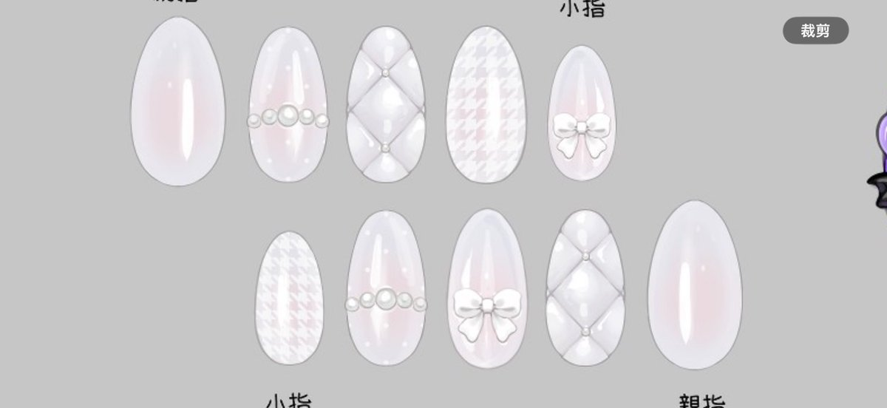
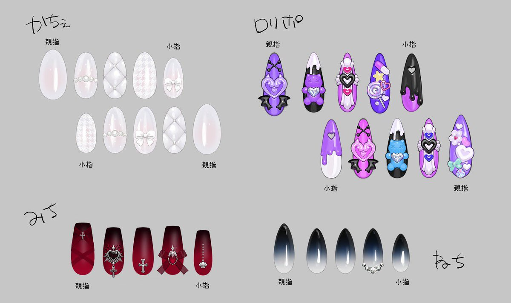

🍥ame❤️🩹
@pleasehelp070
RT @SpicyspacEmk16: 超天酱动画里原创角色们的那些美甲设定真的超米的好吧！！！
升天
尝试还原然后效果超级无敌棒！！！
原本是想做款4的 结果发现还是更爱款1菱格那个 原因是我实在太爱香奶奶这个经典设计了(笑)可惜得小改下 要不然真的做不到设定的效果 (突…


スパイシスペース
@SpicyspacEmk16
超天酱动画里原创角色们的那些美甲设定真的超米的好吧！！！
升天
尝试还原然后效果超级无敌棒！！！
原本是想做款4的 结果发现还是更爱款1菱格那个 原因是我实在太爱香奶奶这个经典设计了(笑)可惜得小改下 要不然真的做不到设定的效果 (突然哭)
💙🫶🤍
后面是设定图哦～>
#ニディガ
#needygirl https://t.co/Q26UYYuvvR